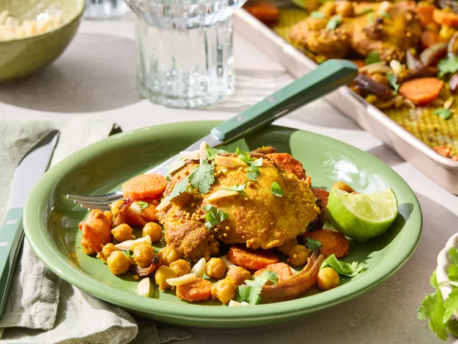

Sheet Pan Chicken and Chickpeas

This sheet pan chicken and chickpeas is well-spiced with a little heat that builds as you eat it.
The chicken is moist and flavorful, the carrots and onion are tender, and chickpeas taste wonderfully rich roasted in the mixture of spices.
A squeeze of lime and cilantro at the end add a bright pop.
Ingredients
- 1/4 cup olive oil
- 1 tablespoon white sugar
- 1 tablespoon yellow or black mustard seeds
- 1 tablespoon ground turmeric
- 1 tablespoon ground cumin
- 1 teaspoon ground ginger
- 1 teaspoon ground coriander
- 3/4 teaspoon salt
- 1/4 teaspoon ground cinnamon
- 1/4 teaspoon cayenne pepper
- 1 pound skinless, boneless chicken thighs
- 1 pound carrots, sliced
- 1 red onion, cut into 1/2-inch thick wedges
- 1 (15 ounce) can garbanzo beans, rinsed and drained
- 1 tablespoon lime juice
- 1/4 cup fresh cilantro leaves
- 2 tablespoons toasted slivered almonds, (optional)
- 1 lime, cut into wedges
Steps
- Gather all ingredients.
Preheat the oven to 425 degrees F (220 degrees C). If desired, line a 10x15x1-inch baking pan with foil; set aside.
- Combine oil, sugar, mustard seeds, turmeric, cumin, ginger, coriander, salt, cinnamon, and cayenne pepper in a large bowl.
- Add chicken, carrots, onion, and garbanzo beans; stir gently to coat. Transfer mixture to the prepared baking pan.
- Roast, uncovered in the preheated oven until carrots are just tender and starting to brown, and chicken is no longer pink.
An instant read thermometer inserted near the center reads at least 165 degrees F (74 degrees C) and, 30 to 35 minutes.
- Drizzle lime juice over chicken mixture. Sprinkle with cilantro and, if desired, almonds. Serve a lime wedge with each serving.